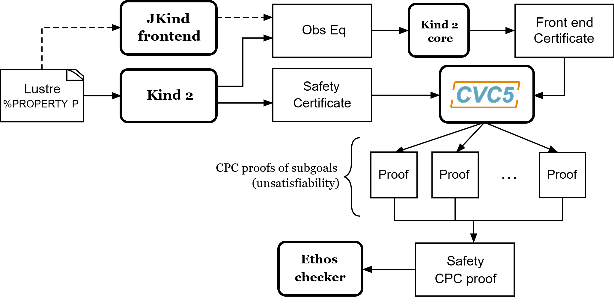
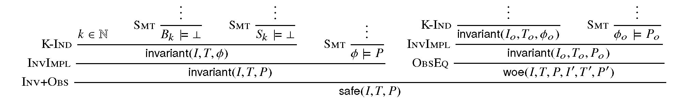

Proof Certificates
One clear strength of model checkers, as opposed to proof assistants, say, is their ability to return precise error traces witnessing the violation of a given safety property. Such traces not only are invaluable for designers to correct bugs, they also constitute a checkable certificate. For instance Kind 2 display a counterexample trace that shows the evolution of values of all variables in the system up to a violation of the property. In most cases, it is possible to use a counterexample for a safety property to direct the execution of the system under analysis to a state that falsifies that property. In contrast, most model checkers are currently unable to return any form of corroborating evidence when they declare a safety property to be satisfied by the system. This is unsatisfactory in general since these are complex tools based on a variety of sophisticated algorithms and search heuristics, and so are not immune to errors.
To mitigate this problem, Kind 2 accompanies its safety claims with a certificate, an artifact embodying a proof of the claim. The certificate can then be validated by a trusted certificate/proof checker, in our case the Ethos checker.
Certification chain
The certification process for Kind 2 is depicted in the graph below. Kind 2 generates two sorts of safety certificates, in the form of SMT-LIB 2 scripts: one certifying the faithfulness of the translation from the Lustre input model to the internal encoding, and another one certifying the invariance of the input properties for the internal encoding of the input system. These certificates are checked by cvc5, then turned into CPC (Cooperating Proof Calculus) proof objects by collecting cvc5’s own proofs and assembling them to form an overall Safety CPC proof that can be efficiently verified by the Ethos proof checker.

Certification process
Trust is claimed at a higher level when both proof certificates are present. In practice, this means that Kind 2 didn’t make any mistake in its model checking phase, and that the translation of the Lustre model to the internal representation is faithful.
Producing certificates and proofs with Kind 2
To illustrate this process, we rely on the toy model below (add_two.lus).
The model encodes in Lustre a synchronous reactive component, add_two, that
at each execution step other than the first, outputs the maximum between the
previous value of its output variable c and the sum of the current values of
input variables a and b. The value of c is initially 1.0. The model
is annotated with an invariance property stating that, at each step, the output
c is positive whenever both inputs are.
node add_two (a, b : real) returns (c : real) ;
var v : real;
P : bool;
let
v = a + b ;
c = 1.0 -> if (pre c) > v then (pre c) else v ;
P = (a > 0.0 and b > 0.0) => c > 0.0 ;
--%PROPERTY P;
telKind 2 offers the possibility to generate two types of certificates: SMT-LIB 2 certificates and actual proofs in the Safety CPC format, an extension of cvc5 CPC proof format that includes proof rules for invariant and safety properties. It will do so only for systems whose properties (or contracts) are all proven valid.
Requirements
Frontend certificates and proofs production require the user to have JKind installed on their machine (together with a suitable version of Java).
SMT-LIB 2 certificates do not require anything additional except for an SMT solver to check the certificates.
Safety proof production requires cvc5 (the binary can be specified
with --cvc5_bin),
the Eunoia signatures
for CPC proofs,
the Eunoia signatures for Safety CPC proofs
(included in the Kind 2 distribution), and the Ethos checker for
the final proof checking phase.
Ethos checker
A bash script to download and build the Ethos checker is distributed with Kind 2:
proofs/get-ethos-checker The script also downloads the cvc5 Eunoia signatures for CPC and
generates an easy-to-use bash script (ethos-check.sh) to
check Safety CPC proofs generated by Kind 2:
proofs
|-- get-ethos-checker.sh
|-- bin
|-- ethos
|-- ethos-check.sh
|-- signatures
|-- cpc
|-- ...
|-- Safety.eoSMT-LIB 2 certificates
These certificates are always produced but are only used as an intermediate
step for CPC proof production. The user still has the possibility to get them
as the final output of Kind 2 in a convenient form. To do so, invoke Kind 2 (on
the previous example add_two.lus) with the following:
kind2 --certif true add_two.lusFor successful runs, the output of Kind 2 will contain:
Post-analysis: certification
Certificate checker was written in add_two.lus.out/certif/certificate.smt2
Generating frontend eq-observer with jKind ...
Generating frontend certificate
...
Certificate checker was written in add_two.lus.out/certif/FEC.kind2.out/certif/FECC.smt2The certificates are located in the directory add_two.lus.out/certificates which has the
following structure:
add_two.lus.out/certif
|-- certificate_checker
|-- certificate_prelude.smt2
|-- certificate.smt2
|-- FEC.kind2
|-- FEC.kind2.out/certif
|-- FECC_checker
|-- FECC_prelude.smt2
|-- FECC.smt2
|-- observer_sys.smt2
|-- jkind_sys.smt2
|-- kind2_sys.smt2
|-- observer.smt2In particular, it contains two scripts of interest: certificate_checker and
FECC_checker. They are meant to be run with the name of an SMT solver as
argument and should produce each three unsat results. The first one checks
that the certificate of invariance is valid with the provided SMT solver and
the second script checks that the frontend certificate is valid.
> add_two.lus.out/certif/certificate_checker z3
Checking base case
unsat
Checking 1-inductive case
unsat
Checking property subsumption
unsat
> add_two.lus.out/certif/FEC.kind2.out/certif/FECC_checker z3
Checking base case
unsat
Checking 1-inductive case
unsat
Checking property subsumption
unsatSafety CPC proofs
The other option offered by Kind 2, and the most trustworthy one, is to produce Safety CPC proofs. This can be done with the following invocation:
kind2 --proof true add_two.lusSuccessful runs emit outputs that contain lines such as:
Post-analysis: certification
Generating proof...
Generating frontend eq-observer with jKind...
...
Generating frontend proof...
Generating safety proof...
Final Safety CPC proof written to add-two.lus.out/certificates.1/safety_proof.cpcThe important one is the last message that indicate the file in which the proof was written. The directory produced by Kind 2 will have the following structure:
add_two.lus.out/
|-- FEC.kind2
|-- certificates.1
|-- frontend_base.smt2
|-- frontend_induction.smt2
|-- kind2_sys.smt2
|-- induction.smt2
|-- frontend_implication.smt2
|-- obs_phi.smt2
|-- jkind_sys.smt2
|-- base.smt2
|-- implication.smt2
|-- kind2_phi.smt2
|-- observer.smt2
|-- proofs.1
|-- induction.cpc
|-- base.cpc
|-- frontend_implication.cpc
|-- frontend_proof.cpc
|-- kind_2_proof.cpc
|-- implication.cpc
|-- frontend_base.cpc
|-- frontend_induction.cpc
|-- safety_proof.cpcIt contains as many proofs (at the root) as there are relevant analysis
performed by Kind 2 (for modular and compositional reasoning). To make sure
that the safety proof is an actual proof, one needs to call the Ethos checker on the
generated output, safety_proof.cpc , together with the correct signatures:
proofs/bin/ethos {--include <cpc signature>}* --include <safety signature> add-two.lus.out/certificates.1/safety_proof.cpc or use the convenient bash script generated by proofs/get-ethos-checker.sh:
proofs/bin/ethos_check.sh add-two.lus.out/certificates.1/safety_proof.cpc The return code for either command execution is 0 when everything was checked
correctly.
When the bash script is used and the whole proof is correct, the following line will be displayed:
correctWhen the bash script is used and the proof does not contain a proof of safety, the following line will be displayed
; WARNING: Safety proof missingThe proof may be correct, but this warning tells you that it does not actually represent a proof of safety.
Contents of certificates
For a given problem (whose safety property is P), an internal certificate consists in only a pair $(k, \phi)$ where $\phi$ is a k-inductive invariant of the system which implies the original properties. SMT-LIB 2 certificates are in fact scripts whose check make sure that $\phi$ implies P and is k-inductive. The Safety CPC proof is a formal proof that P is invariant in the system, using sub-proofs of validity (unsatisfiability) returned by cvc5.
CPC signature
A proof system is formally defined in Eunoia through signatures, which contain
a definition of the system’s language together with axioms and proof rules. The
proof system used by cvc5 is defined over a number of signatures, which are
included in its source code distribution. Those relevant to this work include
the base signatures Cpc.eo and more advanced signatures CpcExpert.eo.
cvc5’s proof system, CPC, is extended with an additional signature (Safety.eo),
which defines the Safety CPC proof system. This is for k-inductive reasoning, invariance and safety.
This signature also specifies the encoding for state variables, initial states,
transition relations, and property predicates. State variables are encoded as
functions from natural numbers to values. This way, the unrolling of the transition
relation does not need the creation of several copies of the state variable tuple x.
For example, for the state vector x = (y , z) with y of type real and z
of type integer, the Safety CPC encoding will make y and z respectively functions
from naturals to reals and integers. So we will use the tuples (y(0) ,
z(0)), (y(1) , z(1)), … instead of (y0 , z0), (y1 , z1), … where
y0 , y 1 , …, z0 , z1, … are (distinct) variables. Correspondingly,
our Safety CPC encoding of a transition relation formula T
is parametrized by two natural variables, the index of the pre-state and of the post-state, instead of two tuples of state variables. Similarly, I, P and $\phi$ are parametrized by a single natural variable.
The signature defines several derivability judgments, including one for proofs of invariance, which has the following type:
It also contains various rules to build proofs of invariance by k-induction. This signature also specifies how to encapsulate proofs for the front-end certificates by providing a additional judgment, safe(I,T,P,I’,T’,P’), which can be derived only when invariant(I,T,P) is derivable and the observational equivalence between (I,T,P) and (I’,T’,P’) is provable (judgment woe). Self contained proofs of safety follow the sketch depicted below, where Smt stands for an unsatisfiability rule whose proof tree is obtained, with minor changes, from a proof produced by cvc5.

Proof sketch